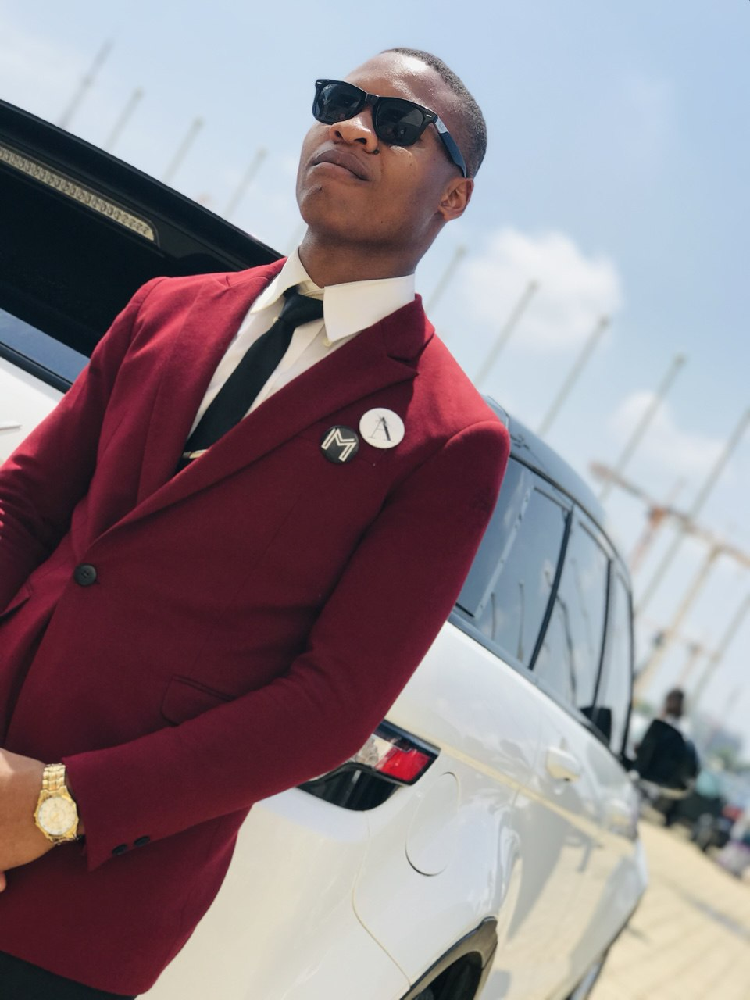

WDD 130 | Wisdom Ikechi

Hello, my name is Wisdom Ikechi and I am from Abuja, Nigeria. My hobbies include Reading, Badmitting. I find documentaries series more interesting, and playing video and board games. I’m currently studying for a degree through BYU-Pathway, and i am excited to dive in. I look forward to building great stuff soon.